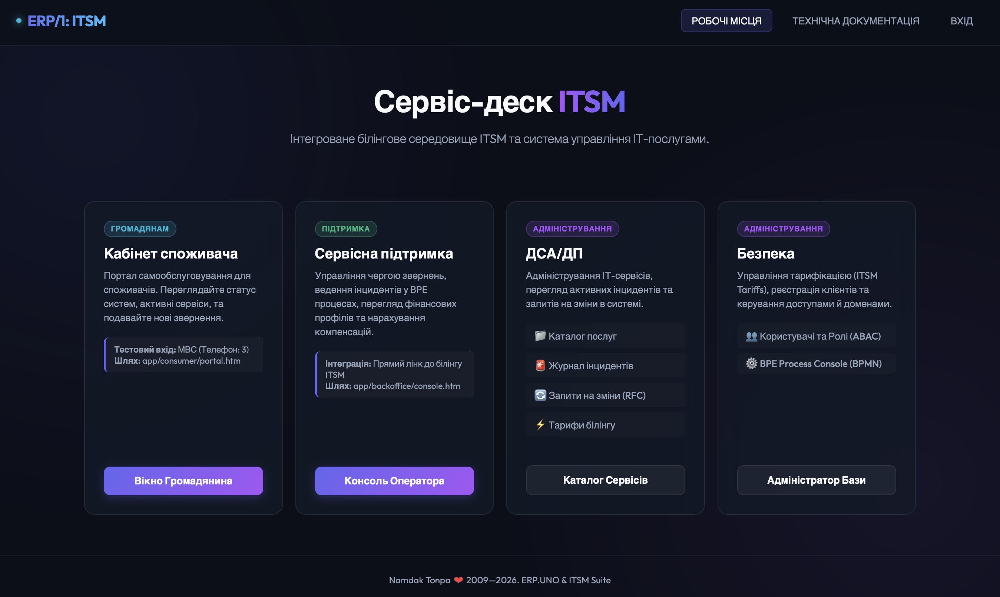

Опис
Сучасна ITSM-система (EXO), побудована на платформі Erlang/OTP. Універсальний менеджер клієнтських рахунків з повною історією тарифікованих транзакцій. Рахунки контролюються бізнес-процесами BPMN, кроки яких визначаються функціями Erlang. Ідеальна основа для побудови білінг-систем, банків та систем надання послуг.

Ключові функції
Універсальний менеджер клієнтських рахунків та історія транзакцій
Оркестрація бізнес-процесів за стандартом BPMN (через BPE)
Транзакційне збереження даних в KVS (на базі RocksDB)
Тарифікація, білінг та управління підписками споживачів
Кабінет споживача: профіль, споживання послуг та налаштування
Бек-офіс: звітність, тарифні моделі та управління доступом
Панель адміністратора для контролю процесів, форм та MNESIA/KVS
Переваги
- Висока продуктивність та стійкість до навантажень завдяки Erlang/OTP
- Гнучке налаштування бізнес-процесів і декларативних правил
- Точний облік кожної послуги та автоматизована тарифікація
- Зручні модульні інтерфейси для адміністрування та споживачів
- Повна історія кроків бізнес-процесів та руху коштів на рахунках
- Масштабованість бази даних із застосуванням RocksDB
- Легка інтеграція з іншими підсистемами ERP/1